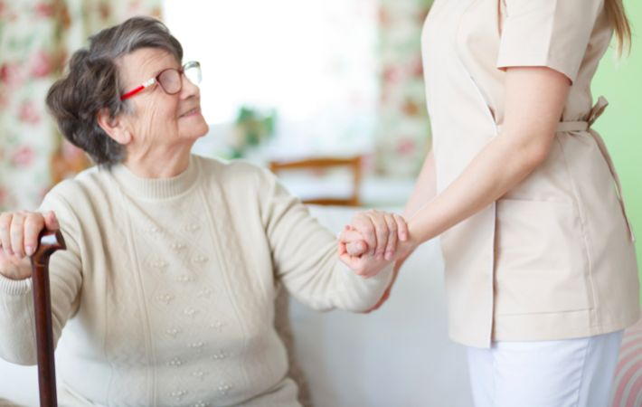

Vous ne pouvez pas vous déplacer ? L'ostéopathe du Cabinet de Grésy vient chez vous, à Grésy-sur-Aix et dans les communes voisines, avec tout le matériel nécessaire.
Consulter votre ostéopathe à Grésy-sur-Aix à domicile présente plusieurs avantages concrets, au-delà du simple confort de rester chez soi.
Dans votre propre environnement, vous êtes plus détendu. L'ostéopathe peut également observer votre posture habituelle, votre poste de travail ou votre espace de sommeil — des informations précieuses pour un traitement adapté.
Un lumbago aigu, une grossesse avancée ou une mobilité réduite rendent parfois le trajet jusqu'au cabinet difficile ou douloureux. La consultation à domicile supprime cette contrainte.
L'ostéopathe se déplace avec une table portable professionnelle. Les techniques disponibles à domicile sont identiques à celles pratiquées au cabinet : manipulations, techniques myofasciales, ostéopathie crânienne.
Handicap moteur, post-opératoire, fracture en cours de consolidation : la consultation à domicile permet d'accéder aux soins ostéopathiques sans les contraintes du déplacement.
En fin de grossesse, le déplacement devient fatigant et parfois douloureux. L'ostéopathe vient préparer votre bassin à l'accouchement dans le confort de votre domicile.
Pour les seniors sans véhicule ou ayant des difficultés à sortir, la visite à domicile garantit la continuité des soins ostéopathiques sans dépendre de l'aide d'un proche.
Éviter de transporter un nourrisson en cas de grand froid ou de maladie bénigne est possible : l'ostéopathe vient traiter bébé à domicile pour les coliques, le torticolis ou la plagiocéphalie.
Pour en savoir plus sur les spécificités de chaque profil, consultez notre page ostéopathie pour bébé, sportif, femme enceinte.
La séance à domicile se déroule exactement comme au cabinet : l'ostéopathe installe la table portable dans un espace dégagé (salon, chambre), réalise l'anamnèse, les tests et le traitement. Une séance complète d'ostéopathie dure entre 45 et 60 minutes.
Prévoyez un espace de 2m × 2m environ. L'ostéopathe apporte tout le matériel. Aucune préparation particulière n'est nécessaire de votre côté.
Pour d'autres communes de Savoie, appelez le cabinet : l'ostéopathe étudiera la faisabilité selon la distance. Pour une urgence à domicile, consultez notre page ostéopathe en urgence.

| Type de consultation | Durée | Tarif |
|---|---|---|
| Consultation — Grésy-sur-Aix / Aix-les-Bains | 45–60 min | 65–75 € |
| Consultation — Communes voisines (<15 min) | 45–60 min | 70–80 € |
| Consultation nourrisson à domicile | 30–40 min | 65–75 € |
Le déplacement est inclus dans le tarif pour Grésy-sur-Aix et Aix-les-Bains. Note d'honoraires remise à l'issue de la séance pour votre mutuelle.
Oui, le cabinet propose des consultations à domicile à Grésy-sur-Aix et dans les communes voisines : Aix-les-Bains, Méry, Mouxy, Saint-Offenge et Trévignin. Appelez le 04 79 35 42 17.
La consultation à domicile est facturée entre 65 et 80€ selon la distance, déplacement inclus. Une note d'honoraires est remise pour votre mutuelle.
Elle est particulièrement adaptée aux personnes à mobilité réduite, femmes enceintes en fin de grossesse, seniors, nourrissons et patients en convalescence post-opératoire.
Oui, l'ostéopathe se déplace avec une table portable professionnelle. La qualité de soin est identique à celle du cabinet. Prévoyez un espace dégagé de 2m × 2m.
Grésy-sur-Aix, Aix-les-Bains, Méry, Mouxy, Saint-Offenge et Trévignin. Pour d'autres communes de Savoie, appelez le cabinet pour vérifier la disponibilité.